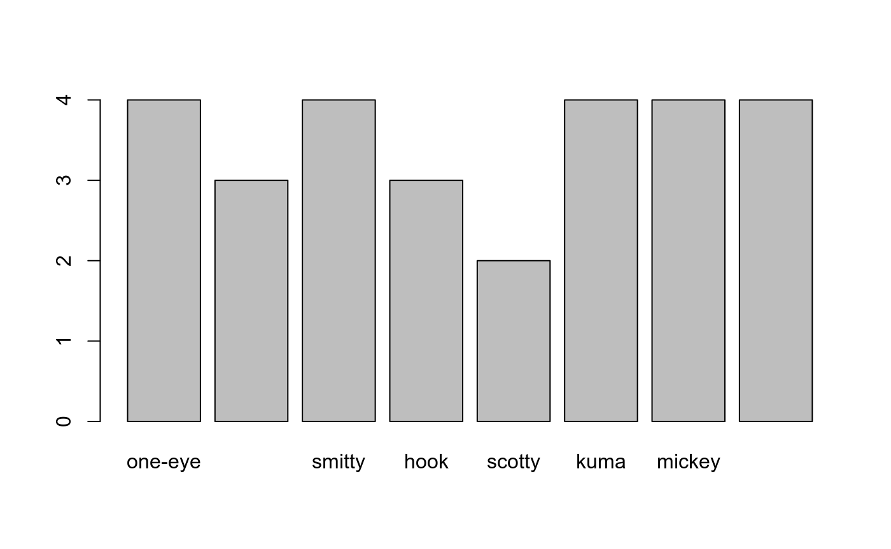
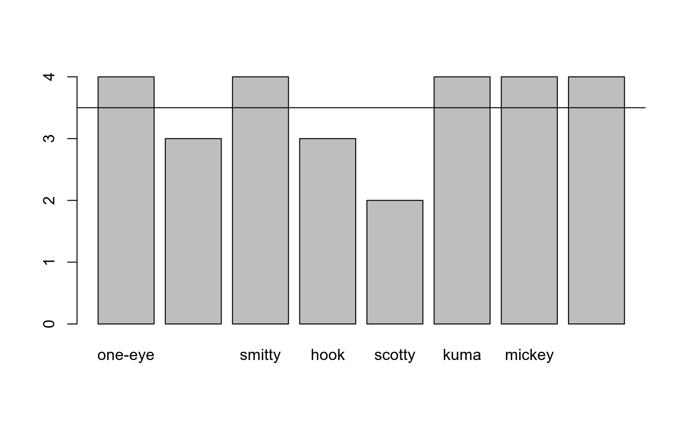
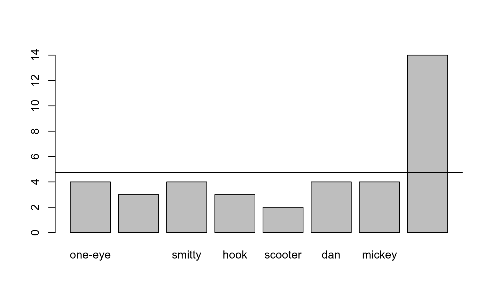
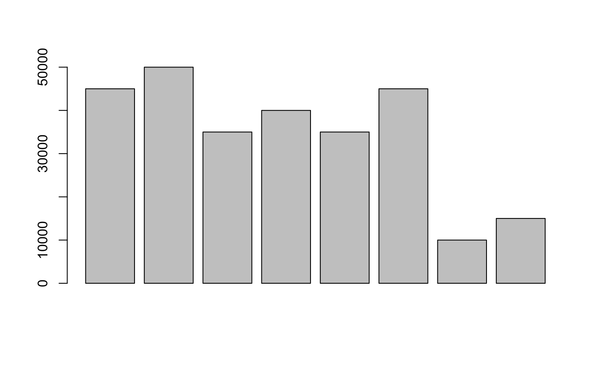
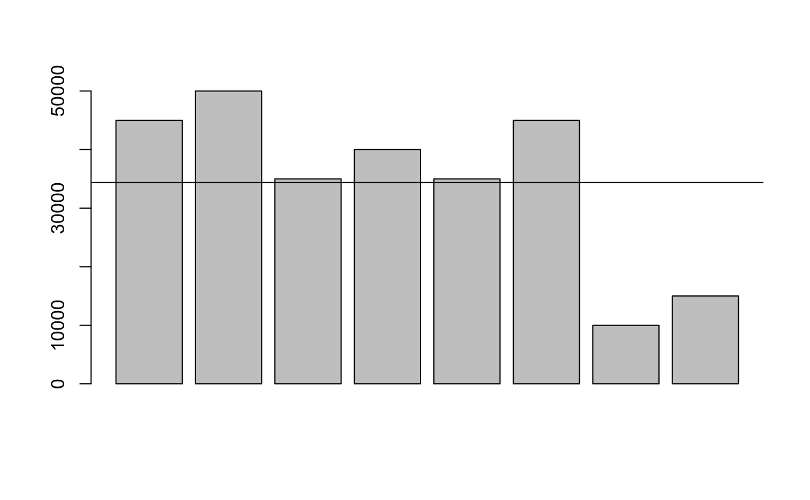
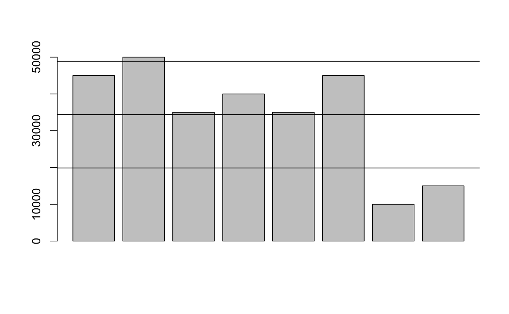

MFM-R-M4.RmdSalah satu tugas penting dari seorang data scientist adalah menjelaskan data yang berupa angka-angka, untuk memberi makna dari angka-angka tersebut. Pada bagian ini kita akan menggunakan R untuk sedikit membantu kita dalam memberi makna pada angka-angka tersebut.
Kita akan coba menjalankan skenario sebagai kapten bajak laut dan menggunakan R untuk satu atau dua hal. :D
4.1 Mean
Kesehatan para awak kapal sangatlah penting sebagai bagian dari kesiapan bajak laut. Kita akan membuat vector yang berisi tingkat kesehatan para awak kapal beserta nama mereka:
healths <- c(4, 3, 4, 3, 2, 4, 4, 4)
names(healths) <- c("one-eye", "peg-leg", "smitty", "hook", "scotty", "kuma", "mickey", "blackbeard")Cara cepat untuk menilai kesiapan awak kapal adalah dengan membuat rata-rata dari keseluruhan tingkat kesehatan awak kapal. Ya! Teman-teman di statistik menyebut cara diatas dengan “mean”—mean bukan satu-satunya cara menghitung rata-rata. Kita bisa menggunakan fungsi mean dan melewatkan vector diatas sebagai parameternya:
## [1] 3.5Rata-rata kesehatan awak kapal lebih mendekati angka 4 dan itu menyenangkan. Kita akan coba menggambarkannya menggunakan barplot:

Pada plot diatas kita dapat menambahkan garis yang menggambarkan mean sehingga kita dapat dengan mudah membandingkan tiap nilai kesehatan para awak. Fungsi abline mempunyai parameter h (horizontal) dengan nilai diisi nilai mean untuk menggambar garis horizontal atau parameter v (vertikal) untuk kebutuhan lainnya. Setelah ditambahkan abline maka memperbaharui tampilan barplot sebelumnya:

4.2 Median
Kita akan mengubah vector health dikarenakan ada awak kapal yang mundur dan digantikan oleh awak kapal baru.
Mari kita lihat bagaimana mean dengan awak kapal baru ini muncul di grafik yang sama:
healths <- c(4,3,4,3,2,4,4,14)
names(healths) <- c("one-eye","peg-leg","smitty","hook","scooter","dan","mickey","davy jones")
mean(healths)## [1] 4.75Ini mungkin benar-benar akurat untuk mengatakan bahwa kru kita memiliki rata-rata 4,75, tetapi ini mungkin juga menyesatkan.

Untuk situasi diatas, mungkin akan lebih membantu jika kita menggunakan median daripada mean. Dengan median, maka kita akan dibantu untuk mendapatkan nilai tengah setelah diurutkan—untuk nilai yang akan dicari mediannya berjumlah genap maka 2 nilai tengah kemudian dibagi 2.
Sekarang kita coba panggil fungsi median dengan vector healths sebagai parameternya:
## [1] 4Sekarang lebih masuk diakal. Berikutnya kita akan coba gambarkan kedalam barplot dan menambahkan garis horizontal sebagai mediannya:
4.3 Standard Deviation
Beberapa penjarahan dari serangan kita baru-baru ini bernilai kurang dari apa yang biasa kita dapatkan. Berikut adalah vektor dengan nilai-nilai dari penjarahan terbaru kita:

Mari kita lihat plot yang menunjukkan nilai rata-rata:

Hasil ini tampak jauh di bawah normal. Para awak kapal berpikir ini kesalahan Smitty dan ingin agar dia jadi santapan para hiu (>:). Sebelum Smitty loncat dan menjadi santapan hiu, Smitty bertanya: > “Seberapa ‘normal’ nilai dari jarahan yang ‘normal’ itu teman?”.
Statistik menggunakan konsep “standar deviasi” dari mean untuk mendeskripsikan range nilai untuk kumpulan data. Untuk satu kelompok angka, ini menunjukkan berapa banyak variasi dari nilai rata-rata. Untuk menghitung standar deviasi, kita menghitung mean dari nilai-nilai kemudian kurangi mean dari masing-masing angka, kemudian kuadratkan hasilnya, setelah itu dibuatkan rata-ratanya dan terakhir di akar kuadratkan.
Terdengar rumit dan membingungkan? Untungnya kita menggunakan R dan kita bisa menggunakan fungsi sd kemudian melewatkan sebuah vector sebagai parameternya. Kita coba panggil fungsi sd dan vector pounds sebagai parameternya:
## [1] 14500.62Tambahkan garis horizontal pada barplot kita untuk menunjukkan standar deviasi di atas rata-rata (diatas kisaran normal)

Yeaay kita mendapatkan jarahan senilai 50.000!
Sekarang coba tambahkan garis untuk standar deviasi dibawah mean. (dibawah kisaran normal):
barplot(pounds)
abline(h = meanValue)
abline(h = meanValue + deviation)
abline(h = meanValue - deviation)
Kita hampir digantung oleh orang-orang Spanyol hanya untuk ini?! Smitty!! Loncat sekarang juga!